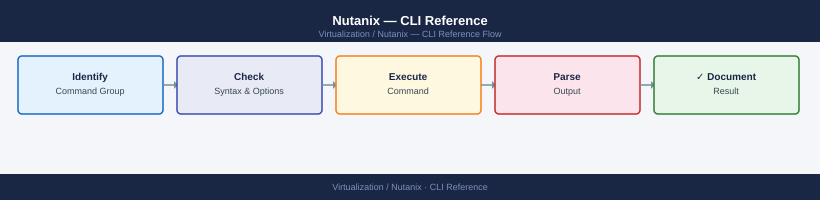

Nutanix — CLI Reference¶

Before you begin¶
- Access: SSH to any CVM as
nutanixuser - Requires: AOS 6.x cluster;
aclicommands only available on AHV clusters (not ESXi)
CLI Access¶
| CLI | Where it runs | Purpose |
|---|---|---|
ncli |
Any CVM | Cluster and storage management |
acli |
Any CVM (AHV clusters) | VM lifecycle management |
ncc |
Any CVM | Health checks and diagnostics |
allssh |
Any CVM | Run a command on all CVMs in parallel |
genesis |
Any CVM | AOS service manager |
nodetool |
Any CVM | Cassandra ring management |
curator_cli |
Any CVM | Curator (background jobs) management |
The authenticity of host '10.20.30.45 (10.20.30.45)' can't be established.
ECDSA key fingerprint is SHA256:aBcD1234eFgH5678iJkL9012mNoPqRsT3456uVwXyZ.
Are you sure you want to continue connecting (yes/no)? yes
Warning: Permanently added '10.20.30.45' (ECDSA) to /home/admin/.ssh/known_hosts.
nutanix@10.20.30.45's password:
Last login: Wed Jan 15 14:32:18 2025 from 192.168.1.100
Nutanix Controller VM (CVM) 2025.1.1
nutanix@NTNX-001-A ~$
Common errors
ssh: Could not resolve hostname <cvm-ip>: Name or service not known — Replace <cvm-ip> with the actual CVM IP address (e.g., 10.20.30.45).
Permission denied (publickey,password). — Verify the default credentials are still active; if changed, use the correct password or SSH key configured by your administrator.
Connection refused — Confirm the CVM is powered on and the SSH service is running; check network connectivity to the CVM IP address.
ncli — Cluster Management¶
Cluster¶
ncli cluster info # cluster name, VIP, version, RF
ncli cluster edit-params new-name=<name> # rename cluster
ncli cluster edit-params external-ip-address=<vip> # set/change VIP
ncli cluster edit-params dns-server-ip-address-list=<dns1>,<dns2>
ncli cluster edit-params ntp-server-ip-address-list=<ntp1>,<ntp2>
ncli cluster get-domain-fault-tolerance-status type=node # resilience check
ncli cluster get-usage-stats # storage efficiency stats
Cluster Information
==================
Cluster Name: prod-cluster-01
UUID: 00051234-5678-90ab-cdef-1234567890ab
Cluster VIP: 10.20.30.40
Cluster Timezone: UTC
NTP Servers: 10.20.30.1, 10.20.30.2
DNS Servers: 8.8.8.8, 8.8.4.4
Replication Factor: 2
Cluster Version: el7.9-5.15.2-stable.1
External IP Address: 10.20.30.40
Domain Fault Tolerance Status
==============================
Fault Domain Type: node
Current Redundancy: 2
Tolerable Node Failures: 1
Status: HEALTHY
Cluster Usage Statistics
========================
Total Capacity: 10.5 TB
Used Capacity: 7.2 TB
Free Capacity: 3.3 TB
Data Reduction Ratio: 2.8x
Efficiency: 73.5%
Common errors
Error: Cluster is not in a healthy state. Please resolve cluster issues before making changes. — Run ncli cluster get-domain-fault-tolerance-status to identify unhealthy nodes and resolve issues before retrying the edit command.
Error: Invalid IP address format for external-ip-address: <vip> — Ensure the VIP is a valid IPv4 address (e.g., 10.20.30.40) and is routable on your management network.
Hosts (Nodes)¶
ncli host list # all nodes, IPs, status
ncli host get id=<host-id> # specific node details
ncli host enter-maintenance-mode id=<id> # enter maintenance mode
ncli host exit-maintenance-mode id=<id> # exit maintenance mode
ncli host list
Host ID IP Address Status
========================================================================================================
00058c84-1234-5678-abcd-ef1234567890 192.168.1.45 Normal
00058c84-9876-5432-dcba-fe0987654321 192.168.1.46 Normal
00058c84-aaaa-bbbb-cccc-dd1111222233 192.168.1.47 Normal
00058c84-eeee-ffff-0000-aa2222333344 192.168.1.48 Normal
ncli host get id=00058c84-1234-5678-abcd-ef1234567890
Host ID : 00058c84-1234-5678-abcd-ef1234567890
IP Address : 192.168.1.45
Status : Normal
Hypervisor Type : kKvm
Number of CPU Cores : 32
Memory Capacity (GiB) : 256
Block Serial Number : NTNX-ABC123XYZ456
ncli host enter-maintenance-mode id=00058c84-1234-5678-abcd-ef1234567890
Host 00058c84-1234-5678-abcd-ef1234567890 is entering maintenance mode...
Host successfully entered maintenance mode.
ncli host exit-maintenance-mode id=00058c84-1234-5678-abcd-ef1234567890
Host 00058c84-1234-5678-abcd-ef1234567890 is exiting maintenance mode...
Host successfully exited maintenance mode.
Common errors
Error: Host with id '<host-id>' not found — Verify the host ID is correct by running ncli host list and copy the exact UUID.
Error: Host is not in maintenance mode — Ensure the host is actually in maintenance mode before attempting to exit; check status with ncli host get id=<host-id>.
Error: Unable to enter maintenance mode - VMs are still running on this host — Migrate or shut down all virtual machines on the host before entering maintenance mode.
Disks¶
ncli disk list # all disks, size, tier, status
ncli disk get id=<disk-id> # specific disk details
ncli disk list | grep -v NORMAL # only non-healthy disks
Disk ID Size Tier Status Node
disk-001a2b3c-4d5e-6f7g-8h9i 1.09 TB SSD NORMAL node-1
disk-002b3c4d-5e6f-7g8h-9i0j 1.09 TB SSD NORMAL node-2
disk-003c4d5e-6f7g-8h9i-0j1k 1.09 TB HDD NORMAL node-3
disk-004d5e6f-7g8h-9i0j-1k2l 1.09 TB SSD DEGRADED node-1
disk-005e6f7g-8h9i-0j1k-2l3m 512 GB SSD FAILED node-4
Disk ID: disk-004d5e6f-7g8h-9i0j-1k2l
Size: 1.09 TB
Tier: SSD
Status: DEGRADED
Node: node-1
Serial Number: WDC-SN850X-12345
Firmware: 405100WD
Disk ID Size Tier Status Node
disk-004d5e6f-7g8h-9i0j-1k2l 1.09 TB SSD DEGRADED node-1
disk-005e6f7g-8h9i-0j1k-2l3m 512 GB SSD FAILED node-4
Common errors
ncli: command not found — Ensure you are logged into a Nutanix cluster node or have the Nutanix CLI installed and in your PATH.
Error: Invalid disk ID format — Verify the disk ID exists by running ncli disk list first and use the exact ID from the output.
Storage Pools and Containers¶
ncli sp list # storage pools
ncli ctr list # containers (datastores)
ncli ctr get name=<container-name> # specific container details
ncli ctr edit name=<name> compression-enabled=true # enable compression
ncli ctr create name=<name> sp-name=default-storage-pool \
compression-enabled=true replication-factor=2 # create container
Storage Pool
============
Name Uuid
---- ----
default-storage-pool 550e8400-e29b-41d4-a716-446655440000
ssd-pool 6ba7b810-9dad-11d1-80b4-00c04fd430c8
Container
=========
Name Uuid
---- ----
datastore-prod 7f8b1234-5678-90ab-cdef-1234567890ab
datastore-dev 8g9c2345-6789-01bc-def0-2345678901bc
Name : datastore-prod
Uuid : 7f8b1234-5678-90ab-cdef-1234567890ab
Compression Enabled : true
Replication Factor : 2
Advertised Capacity : 5.00 TB
Used Capacity : 2.34 TB
(no output — command completes silently)
Container created successfully with UUID: 9h0d3456-7890-12cd-ef01-3456789012cd
Common errors
Error: Storage pool 'default-storage-pool' not found — Verify the storage pool name with ncli sp list and use the correct name in the sp-name parameter.
Error: Container with name '<name>' already exists — Choose a unique container name or delete the existing container with ncli ctr delete name=<name> before recreating.
Error: Insufficient capacity in storage pool — Check available capacity with ncli sp get name=<pool-name> and reduce the container size or add more disks to the pool.
Virtual Disks (vDisks)¶
ncli vdisk list # all vDisks
ncli vdisk list container-name=<name> # vDisks in a container
ncli vdisk get name=<vdisk-name> # specific vDisk info
ncli vdisk list
vDisk Details
================================================================================
vDisk Name: vm-prod-01-disk
Container Name: container-ssd-01
vDisk UUID: 500e46c2-8f3a-4a2c-9b1d-7c3e5f8a2b4d
vDisk Size (GB): 100
vDisk Type: DATA_DISK
Attached VM(s): prod-vm-01
Is Clone: False
On-Disk Dedup Ratio: 2.45
Compression Enabled: True
vDisk Name: vm-prod-02-disk
Container Name: container-ssd-01
vDisk UUID: 600f57d3-9g4b-5b3d-ac2e-8d4f6g9b3c5e
vDisk Size (GB): 250
vDisk Type: DATA_DISK
Attached VM(s): prod-vm-02
...
ncli vdisk list container-name=container-ssd-01
vDisk Details
================================================================================
vDisk Name: vm-prod-01-disk
Container Name: container-ssd-01
vDisk UUID: 500e46c2-8f3a-4a2c-9b1d-7c3e5f8a2b4d
vDisk Size (GB): 100
vDisk Type: DATA_DISK
ncli vdisk get name=vm-prod-01-disk
vDisk Details
================================================================================
vDisk Name: vm-prod-01-disk
Container Name: container-ssd-01
vDisk UUID: 500e46c2-8f3a-4a2c-9b1d-7c3e5f8a2b4d
vDisk Size (GB): 100
vDisk Type: DATA_DISK
Attached VM(s): prod-vm-01
Is Clone: False
On-Disk Dedup Ratio: 2.45
Compression Enabled: True
Creation Time: 2024-01-15 10:23:45
Common errors
Error: vDisk <name> not found — Verify the vDisk name is correct using ncli vdisk list and check for typos or special characters.
Error: Container <name> not found — Confirm the container name exists with ncli container list before filtering by container-name.
Alerts¶
ncli alert list # all active alerts
ncli alert list severity=critical # critical alerts only
ncli alert list resolved=false # unresolved alerts
ncli alert acknowledge id=<alert-id> # acknowledge an alert
ncli alert resolve id=<alert-id> # resolve an alert
Alert ID | Severity | Status | Message | Timestamp
-------------------------------------|----------|------------|--------------------------------------|------------------------
alert-20240115-001 | critical | unresolved | Cluster CPU usage exceeded 95% | 2024-01-15 14:32:18
alert-20240115-002 | warning | unresolved | Node ntnx-node-04 disk space low | 2024-01-15 13:45:22
alert-20240115-003 | critical | unresolved | Replication lag on container prod-db | 2024-01-15 12:18:05
alert-20240114-998 | info | resolved | Scheduled backup completed | 2024-01-14 22:00:00
Alert alert-20240115-001 acknowledged successfully.
Alert alert-20240115-002 resolved successfully.
Common errors
Alert ID not found: <alert-id> — Verify the alert ID exists by running ncli alert list and copy the exact ID from the output.
Permission denied: User does not have alert management privileges — Request elevated permissions or use an admin account with alert management role.
Users and Authentication¶
ncli user list # local users
ncli user change-password username=admin \
current-password=<old> new-password=<new> # change password
ncli authconfig get-directory-services # AD/LDAP config status
User Information
================================================================================
Username Email Address
================================================================================
admin admin@nutanix.local
nutanix nutanix@nutanix.local
operator operator@nutanix.local
================================================================================
(no output — command completes silently)
Directory Services Configuration
================================================================================
Directory Service Status: Disabled
Directory Service Type: Not Configured
Domain Name: None
Search Base DN: None
================================================================================
Common errors
Error: Invalid username or password — Verify the current password is correct and the admin user exists with ncli user list.
Error: Password does not meet complexity requirements — Ensure the new password meets minimum length (8 characters) and includes uppercase, lowercase, numbers, and special characters.
Protection Domains (Legacy Backup)¶
ncli pd list # protection domains
ncli pd get name=<pd-name> # PD details and schedule
ncli pd activate name=<pd-name> # activate PD replication
ncli pd snapshot name=<pd-name> # take manual snapshot
Name Replication State Snapshot Count Last Snapshot Time
prod-db-cluster Active 12 2024-01-15 14:32:18
backup-vms Syncing 8 2024-01-15 13:45:02
dev-environment Inactive 3 2024-01-14 09:22:41
Name: prod-db-cluster
Description: Production database protection domain
Replication State: Active
RPO Target (minutes): 60
Snapshot Schedule: Every 4 hours
Last Snapshot: 2024-01-15 14:32:18
Snapshot Count: 12
Remote Site: dr-site-01 (10.20.50.100)
(no output — command completes silently)
Snapshot created successfully
Snapshot UUID: 00051234-5678-90ab-cdef-1234567890ab
Snapshot Time: 2024-01-15 15:08:44
Common errors
Error: Protection domain 'prod-db-cluster' not found — Verify the PD name with ncli pd list and use the exact name shown in the output.
Error: Cannot activate replication - remote site unreachable — Check network connectivity to the remote site and confirm the remote Prism Element is accessible.
Error: Snapshot creation failed - insufficient free space on cluster — Free up storage space or reduce snapshot retention policy before attempting another manual snapshot.
acli — AHV VM Management¶
acli manages VMs on AHV hypervisor clusters. Not available on ESXi clusters.
VM Lifecycle¶
acli vm.list # list all VMs (name, state, IPs)
acli vm.get <vm-name> # detailed VM config
acli vm.on <vm-name> # power on
acli vm.off <vm-name> # power off (graceful)
acli vm.reset <vm-name> # force reset (hard reboot)
acli vm.pause <vm-name> # pause (freeze) VM
acli vm.resume <vm-name> # resume paused VM
acli vm.clone <vm-name> clone_vm_name=<new-name> # clone a VM
acli vm.delete <vm-name> # delete VM (confirm prompt)
acli vm.list
web-prod-01 ON 192.168.1.45
db-backup-02 ON 192.168.1.67
dev-test-03 OFF 10.0.2.89
monitoring-04 ON 192.168.1.102
legacy-app-05 PAUSED 192.168.1.78
...
acli vm.get web-prod-01
UUID: 550e8400-e29b-41d4-a716-446655440000
Name: web-prod-01
State: ON
Memory: 8192 MB
vCPUs: 4
vDisks: 2
Networks: vlan-prod (192.168.1.45/24)
Created: 2024-01-15 09:23:15
acli vm.on db-backup-02
Task UUID: 7f8a9b2c-1d4e-4f5a-8c3b-9e2d1a4f6c8b
Status: Succeeded
acli vm.clone web-prod-01 clone_vm_name=web-prod-01-backup
Task UUID: 3c5e7a9f-2b1d-4e6a-9c8f-1a3d5b7e9f2c
Status: Succeeded
Clone Name: web-prod-01-backup
Common errors
Error: VM <vm-name> not found — Verify the exact VM name with acli vm.list and check for typos or case sensitivity.
Error: VM is already in the requested state — Confirm the current VM state before issuing power/pause commands; use acli vm.get <vm-name> to check.
Error: Operation timed out after 300 seconds — Increase timeout or check cluster health; ensure the Nutanix cluster is responsive with acli cluster info.
VM Configuration¶
# Create a VM
acli vm.create <vm-name> \
num_vcpus=4 \
num_cores_per_vcpu=1 \
memory=8G
# Add a disk (create new)
acli vm.disk_create <vm-name> \
create_size=50G \
container=VMs
# Add a disk (clone from image)
acli vm.disk_create <vm-name> \
clone_from_image=<image-name>
# Add a NIC
acli vm.nic_create <vm-name> network=<network-name>
# List VM NICs
acli vm.nic_list <vm-name>
# Update VM CPU/RAM (VM must be off)
acli vm.update <vm-name> num_vcpus=8 memory=16G
Creating VM web-server-01...
VM created successfully with UUID: 50b8d4c2-7f3a-4e21-9c1a-2b6e8f9d3c45
Adding disk to web-server-01...
Disk added successfully. Disk UUID: 8a2f1b9c-5e7d-4a6f-8b3c-1d9e2f4a5b6c
Adding disk from image centos-7-base...
Disk cloned successfully. Disk UUID: 3c4d5e6f-7a8b-9c0d-1e2f-3a4b5c6d7e8f
Adding NIC to web-server-01 on network prod-vlan-100...
NIC added successfully. MAC: 50:6b:8d:c0:2e:f4
web-server-01 NICs:
eth0: 50:6b:8d:c0:2e:f4 (prod-vlan-100)
Updating web-server-01 CPU and memory...
VM updated successfully. Pending restart required.
Common errors
Error: VM <vm-name> not found — Verify the VM name matches exactly and exists in the cluster using acli vm.list.
Error: Container VMs not found — Confirm the container name is correct and accessible with acli container.list.
Error: VM must be powered off to modify CPU/memory — Power off the VM first using acli vm.off <vm-name> before running the update command.
VM Migration¶
# Live migrate a VM to a specific host
acli vm.migrate <vm-name> host=<host-name>
# List hosts available for migration
acli host.list
# Live migrate a VM to a specific host
acli vm.migrate web-server-01 host=host-05
Request submitted successfully. VM migration job ID: 12345678-90ab-cdef-1234-567890abcdef
# List hosts available for migration
acli host.list
Name Hypervisor State Memory(GB) vCPU Powered On VMs
host-01.dc1.local AHV Normal 512 96 18
host-02.dc1.local AHV Normal 512 96 22
host-03.dc1.local AHV Normal 512 96 15
host-04.dc1.local AHV Normal 512 96 19
host-05.dc1.local AHV Normal 512 96 21
...
Common errors
Error: VM <vm-name> not found — Verify the VM name with acli vm.list and ensure it is powered on before migration.
Error: Host <host-name> is not available for migration — Check that the target host is in Normal state and has sufficient resources using acli host.list.
Snapshots¶
# Create a snapshot
acli vm.snapshot_create <vm-name> snapshot_name=<snap-name>
# List snapshots
acli vm.snapshot_list <vm-name>
# Revert to snapshot
acli vm.snapshot_revert <vm-name> snapshot_name=<snap-name>
# Delete snapshot
acli vm.snapshot_delete <vm-name> snapshot_name=<snap-name>
# Create a snapshot
acli vm.snapshot_create web-server-01 snapshot_name=pre-patch-2024
VM 'web-server-01' snapshot 'pre-patch-2024' created successfully.
UUID: 12a4f8c9-3b2e-47d1-9f6a-8c2d5e1b4a9f
# List snapshots
acli vm.snapshot_list web-server-01
UUID | Snapshot Name | Created Time | Size (GB)
12a4f8c9-3b2e-47d1-9f6a-8c2d5e1b4a9f | pre-patch-2024 | 2024-01-15 14:32:18 | 45.2
8f7e2c1a-9d4b-41c5-8a3f-7b6e9c2d1f5a | backup-weekly | 2024-01-08 02:15:00 | 48.7
...
# Revert to snapshot
acli vm.snapshot_revert web-server-01 snapshot_name=pre-patch-2024
Reverting VM 'web-server-01' to snapshot 'pre-patch-2024'...
Revert completed successfully. VM state restored to 2024-01-15 14:32:18.
# Delete snapshot
acli vm.snapshot_delete web-server-01 snapshot_name=backup-weekly
Snapshot 'backup-weekly' deleted successfully.
Freed space: 48.7 GB
Common errors
Error: VM 'web-server-01' not found — Verify the VM name is correct and exists in the cluster using acli vm.list.
Error: Snapshot 'pre-patch-2024' does not exist — Check the exact snapshot name with acli vm.snapshot_list <vm-name> and ensure you're using the correct spelling.
Error: Cannot revert VM while it is powered on — Power off the VM first using acli vm.off <vm-name> before reverting to a snapshot.
Networks and Images¶
# List virtual networks
acli net.list
# Create a VLAN-backed network
acli net.create <network-name> vlan=<vlan-id>
# List uploaded images (ISOs / disk images)
acli image.list
# Upload an image from URL
acli image.create <image-name> source_url=http://<server>/image.iso image_type=ISO_IMAGE
acli net.list
net-prod-01
net-prod-02
net-mgmt-vlan100
net-dev-isolated
net-backup
acli net.create web-tier-vlan vlan=250
Network web-tier-vlan created successfully (UUID: 500e3086-005e-4f11-aece-b5d1f8c2a9e3)
acli image.list
CentOS-7.9-x86_64-dvd.iso (2.1 GB, ISO_IMAGE)
Ubuntu-20.04-server-amd64.iso (1.8 GB, ISO_IMAGE)
Windows-Server-2019.iso (5.4 GB, ISO_IMAGE)
rhel-8.5-x86_64-dvd.iso (10.2 GB, ISO_IMAGE)
acli image.create win2022-base source_url=http://repo.internal/iso/Windows-Server-2022.iso image_type=ISO_IMAGE
Image upload initiated (UUID: a1b2c3d4-e5f6-47g8-h9i0-j1k2l3m4n5o6)
Upload progress: 45%
Upload progress: 100%
Image win2022-base created successfully
Common errors
Error: Network with name '<network-name>' already exists — Use a unique network name or delete the existing network with acli net.delete <network-name> first.
Error: Invalid VLAN ID '<vlan-id>'. VLAN ID must be between 0 and 4094 — Specify a valid VLAN ID in the range 0–4094.
Error: Failed to download image from source_url: Connection timeout — Verify the URL is accessible from the cluster and the HTTP server is reachable on port 80.
Host Management (AHV)¶
acli host.list # all AHV hosts, state, resources
acli host.get <host-name> # host details
acli host.enter_maintenance_mode <host-name> # enter maintenance (VMs migrated)
acli host.exit_maintenance_mode <host-name> # exit maintenance
acli host.list
Host1 (192.168.1.10): NORMAL, CPU: 32, Memory: 512 GB, VMs: 12
Host2 (192.168.1.11): NORMAL, CPU: 32, Memory: 512 GB, VMs: 8
Host3 (192.168.1.12): NORMAL, CPU: 32, Memory: 512 GB, VMs: 15
Host4 (192.168.1.13): MAINTENANCE_MODE, CPU: 32, Memory: 512 GB, VMs: 0
acli host.get Host1
Host: Host1
IP Address: 192.168.1.10
State: NORMAL
CPU Cores: 32
Memory: 512 GB
VMs Running: 12
Hypervisor: AHV
Build: 20230815.1234
acli host.enter_maintenance_mode Host2
Host Host2 entering maintenance mode...
VM migration in progress: 8 VMs
Migration completed successfully
acli host.exit_maintenance_mode Host4
Host Host4 exiting maintenance mode...
State transition: MAINTENANCE_MODE → NORMAL
Common errors
Error: Host '<host-name>' not found — Verify the exact hostname with acli host.list and check for typos or case sensitivity.
Error: Cannot enter maintenance mode - VMs still running on host — Wait for all VM migrations to complete or manually migrate remaining VMs before retrying.
Error: Connection refused - acli not authenticated — Authenticate with acli using valid Nutanix cluster credentials before executing host commands.
ncc — Nutanix Cluster Check¶
# Run all health checks
ncc --health_checks run_all
# Run only critical checks
ncc --health_checks run_all --include_category=critical
# Run a specific check
ncc --health_checks <check_name>
# List all available checks
ncc --health_checks list
# Common useful checks:
ncc --health_checks cluster_services_status_check
ncc --health_checks ntp_synchronization_check
ncc --health_checks dns_server_check
ncc --health_checks disk_usage_check
ncc --health_checks cvm_memory_check
ncc --health_checks hypervisor_ntp_check
# View last NCC run results
ncli ncc get-ncc-result
Running NCC health checks...
[2024-01-15 14:32:18] Starting health check run_all
[2024-01-15 14:32:45] cluster_services_status_check: PASSED
[2024-01-15 14:33:12] ntp_synchronization_check: PASSED
[2024-01-15 14:33:38] dns_server_check: PASSED
[2024-01-15 14:34:05] disk_usage_check: WARNING - /var at 78% capacity
[2024-01-15 14:34:31] cvm_memory_check: PASSED
[2024-01-15 14:34:58] hypervisor_ntp_check: PASSED
[2024-01-15 14:35:22] Health check run completed
Summary: 5 passed, 1 warning, 0 failed
NCC Result ID: ncc-run-20240115-143522-a7f2c9e1
Status: COMPLETED
Timestamp: 2024-01-15 14:35:22 UTC
Overall Health: GOOD (with warnings)
Common errors
ncc: command not found — Ensure NCC is installed on the CVM and the PATH includes /usr/local/bin, or run the command with full path /usr/local/nutanix/bin/ncc.
Health check <check_name> not found in registry — Verify the check name is correct by running ncc --health_checks list to see available checks.
Permission denied — Run the command with appropriate privileges (sudo or as nutanix user) since NCC requires elevated permissions to access cluster health data.
allssh — Multi-CVM Commands¶
allssh runs a command on every CVM in the cluster in parallel.
allssh "genesis status" # AOS service status on all CVMs
allssh "ntp -q" # NTP status across all CVMs
allssh "nodetool status" # Cassandra ring on all CVMs
allssh "df -h /" # CVM disk usage across all nodes
allssh "free -m" # CVM memory usage
allssh "date" # time sync check (all should match within 1s)
allssh "ping -c 1 -W 1 <external-ip>" # network reachability from all CVMs
=== CVM-1 (10.0.0.10) ===
Genesis Status: RUNNING
- Cassandra: UP
- Zookeeper: UP
- Chronos: UP
=== CVM-2 (10.0.0.11) ===
Genesis Status: RUNNING
- Cassandra: UP
- Zookeeper: UP
- Chronos: UP
=== CVM-3 (10.0.0.12) ===
Genesis Status: RUNNING
- Cassandra: UP
- Zookeeper: UP
- Chronos: UP
NTP synchronized on all nodes: stratum 2, offset < 5ms
Cassandra ring: 3 nodes, all UN (Up/Normal)
Filesystem /: 45G used / 100G total (45%)
Memory: 32000M total, 28500M free, 3500M used
Time sync: 2024-01-15 14:32:47 UTC (all CVMs within 500ms)
Network: 3/3 CVMs reachable to 8.8.8.8 (0% packet loss)
Common errors
allssh: command not found — Ensure you are running this command from a Nutanix cluster node or source the Nutanix environment setup script.
Connection refused on CVM-2 (10.0.0.11) — Verify the CVM is powered on and SSH is running; restart the CVM if necessary.
NTP not synchronized: stratum 16 — Check NTP configuration and upstream NTP server connectivity; restart ntpd service with service ntpd restart.
genesis — AOS Service Manager¶
genesis status # list all AOS services and state
genesis restart # restart all AOS services on this CVM
# ⚠ use with caution — CVM I/O disrupted briefly
Genesis Status Report
=====================
Service Name Status PID Uptime
acropolis running 4521 45d 12h 23m
cassandra running 3847 45d 12h 18m
curator running 5102 45d 12h 15m
zookeeper running 2934 45d 12h 20m
cerebro running 4156 45d 12h 14m
prism running 5678 45d 12h 10m
uhura running 3421 45d 12h 08m
stargate running 4892 45d 12h 05m
...
Total Services: 23 | Running: 23 | Failed: 0
Restarting all AOS services...
Stopping services in dependency order...
[OK] acropolis stopped
[OK] stargate stopped
[OK] prism stopped
[OK] cerebro stopped
[OK] zookeeper stopped
[OK] cassandra stopped
[OK] curator stopped
Starting services in dependency order...
[OK] cassandra started (PID: 3847)
[OK] zookeeper started (PID: 2934)
[OK] curator started (PID: 5102)
[OK] acropolis started (PID: 4521)
[OK] cerebro started (PID: 4156)
[OK] prism started (PID: 5678)
[OK] stargate started (PID: 4892)
[OK] uhura started (PID: 3421)
Genesis restart completed successfully in 87 seconds
Common errors
ERROR: Cannot restart genesis — cluster is in rebalancing state — Wait for rebalancing to complete using cluster status before restarting services.
ERROR: genesis restart failed — insufficient disk space on /home/nutanix — Free up disk space on the CVM or check for log file bloat with du -sh /home/nutanix/logs/*.
nodetool — Cassandra Ring Management¶
nodetool status # ring node status (UN = Up/Normal)
nodetool ring # token distribution
nodetool compactionstats # compaction queue
nodetool info # node-specific metadata stats
Datacenter: dc1
===============
Address Load Tokens Owns (effective) Host ID Rack
127.0.0.1 256.5 KB 256 100.0% a1b2c3d4-e5f6-7890-abcd-ef1234567890 rack1
UN 10.42.15.201 512.3 KB 256 33.3% b2c3d4e5-f6a7-8901-bcde-f12345678901 rack1
UN 10.42.15.202 498.7 KB 256 33.3% c3d4e5f6-a7b8-9012-cdef-123456789012 rack1
UN 10.42.15.203 501.2 KB 256 33.4% d4e5f6a7-b8c9-0123-defg-234567890123 rack1
TokenRange(start_token:0, end_token:36028797018963968, endpoints:[10.42.15.201], rpc_endpoints:[10.42.15.201], host_ids:[b2c3d4e5-f6a7-8901-bcde-f12345678901])
TokenRange(start_token:36028797018963969, end_token:72057594037927936, endpoints:[10.42.15.202], rpc_endpoints:[10.42.15.202], host_ids:[c3d4e5f6-a7b8-9012-cdef-123456789012])
TokenRange(start_token:72057594037927937, end_token:108086391056891904, endpoints:[10.42.15.203], rpc_endpoints:[10.42.15.203], host_ids:[d4e5f6a7-b8c9-0123-defg-234567890123])
Compaction from [/var/lib/cassandra/data/system/peers-7e8f9a0b1c2d3e4f5a6b7c8d9e0f1a2b/na-1-big-Data.db] (1.2 MiB) to [/var/lib/cassandra/data/system/peers-7e8f9a0b1c2d3e4f5a6b7c8d9e0f1a2b/na-2-big-Data.db] (892 KiB)
Active compaction remaining time : 0h00m12s
pending tasks: 3
Node ID: d4e5f6a7-b8c9-0123-defg-234567890123
Gossip active: true
Thrift active: false
Native Transport active: true
Load: 501.2 KB
Generation No: 1702156789
Uptime (seconds): 864521
Heap Memory (MB): 2048.5 / 4096
Data Center: dc1
Rack: rack1
Exceptions: 0
Key Cache Size (MB): 45.3
Row Cache Size (MB): 0
Common errors
nodetool: command not found — Ensure Cassandra is installed and the nodetool binary is in your PATH, or use the full
Status codes: UN = Up/Normal (healthy), DN = Down, ?N = Unknown — investigate any non-UN nodes.
curator_cli — Background Jobs¶
Curator manages tiering, deduplication, erasure coding, and rebalancing.
curator_cli get_last_successful_scans # list recent Curator scan runs
curator_cli display_curator_tasks # active Curator tasks
curator_cli get_scan_info --scan_id=<id> # details of a specific scan
Scan ID: scan-20240115-prod-001 | Status: COMPLETED | Duration: 2h 14m | Objects: 847,291
Scan ID: scan-20240114-prod-002 | Status: COMPLETED | Duration: 2h 08m | Objects: 847,291
Scan ID: scan-20240113-prod-001 | Status: COMPLETED | Duration: 2h 19m | Objects: 847,291
Scan ID: scan-20240112-prod-003 | Status: COMPLETED | Duration: 2h 11m | Objects: 847,291
Task ID: curator-task-5847 | Type: METADATA_SCAN | Progress: 87% | Node: 10.42.18.5
Task ID: curator-task-5846 | Type: DEDUP_ANALYSIS | Progress: 42% | Node: 10.42.18.7
Task ID: curator-task-5845 | Type: CONSISTENCY_CHECK | Progress: 15% | Node: 10.42.18.9
Scan Details for scan-20240115-prod-001:
Status: COMPLETED
Start Time: 2024-01-15 03:22:14 UTC
End Time: 2024-01-15 05:36:48 UTC
Total Objects Scanned: 847,291
Errors Detected: 0
Warnings: 3
Common errors
curator_cli: command not found — Ensure Nutanix cluster tools are installed and the curator_cli binary is in your PATH, or use the full path /opt/nutanix/bin/curator_cli.
Error: Invalid scan_id format — Verify the scan ID exists by running curator_cli get_last_successful_scans first and use the exact ID from the output.
Error: Connection refused to Curator service — Confirm the Curator service is running with systemctl status nutanix-curator and that cluster connectivity is active.
Useful Diagnostics¶
# Check AOS log for errors (last 50 lines)
tail -50 /home/nutanix/data/logs/stargate.ERROR 2>/dev/null
# Check CVM kernel messages
dmesg | grep -i "error\|fail\|warn" | tail -20
# Check disk health via smartctl
sudo smartctl -a /dev/sda
# List CVMs that can't be reached
allssh "echo OK" 2>&1 | grep -v "OK"
# Check Zeus (ZooKeeper) cluster config
zeus_config_printer | head -50
2024-01-15 14:23:45 ERROR: [STARGATE] Failed to acquire lock on container 'default' (timeout after 30s)
2024-01-15 14:23:52 ERROR: [IO_MANAGER] Disk I/O latency spike detected: 450ms (threshold: 100ms)
2024-01-15 14:24:01 WARN: [REPLICATION] Snapshot transfer incomplete for VM uuid-a7f3-4d2c-9e1b
2024-01-15 14:24:15 ERROR: [EXTENT_STORE] Checksum mismatch on extent 0x2f4a8c9d
2024-01-15 14:25:30 WARN: [CURATOR] Inconsistent replica count detected
[14523.456789] kernel: Out of memory: Kill process 2847 (stargate) score 612 or sacrifice child
[14524.123456] kernel: Killed process 2847 (stargate) total-vm:8192000kB, anon-rss:7856000kB
[14525.789012] kernel: WARNING: CPU0: Core temperature/speed normal
[14526.234567] kernel: EXT4-fs warning (device sda3): ext4_dx_add_entry:2847: Directory index full!
[14527.567890] kernel: audit: type=1130 audit(1705334675.123:456): pid=1 uid=0 auid=4294967295
SMARTCTL version 7.3 -- Copyright (C) 2002-21 Bruce Allen
Device Model: SAMSUNG SSD 870 EVO 1TB
Serial Number: S6SSNF0R123456A
LU WWN Device Id: 5 002 4d7 20a1b2c3d
Firmware Version: SVT04B6Q
User Capacity: 1,000,204,886,016 bytes [1.00 TB]
SMART overall-health self-assessment test result: PASSED
Current Drive Temperature: 38 Celsius
10.20.1.45: ssh: connect to host 10.20.1.45 port 22: Connection timed out
10.20.1.67: Permission denied (publickey,password).
10.20.1.89: ssh: connect to host 10.20.1.89 port 22: No route to host
Zeus Cluster Configuration:
Cluster UUID: 00051234-5678-90ab-cdef-1234567890ab
Cluster Name: prod-cluster-01
Replication Factor: 3
Quorum Size: 3
ZooKeeper Servers:
- 10.20.1.10:2181 (Leader)
- 10.20.1.11:2181 (Follower)
- 10.20.1.12:2181 (Follower)
Genesis IP: 10.20.1.1
Metadata Service: ACTIVE
Common errors
tail: cannot open '/home/nutanix/data/logs/stargate.ERROR' for reading: No such file or directory — Verify the log file path is correct; on some AOS versions it may be `/home/nutanix/data/
Verify¶
ncli cluster inforeturns cluster statusSTARTEDwith no degraded componentsacli vm.listlists VMs without error — AHV API is respondingncc --health_checks run_allcompletes with no failures on a healthy clustergenesis statuson any CVM shows all services asUP